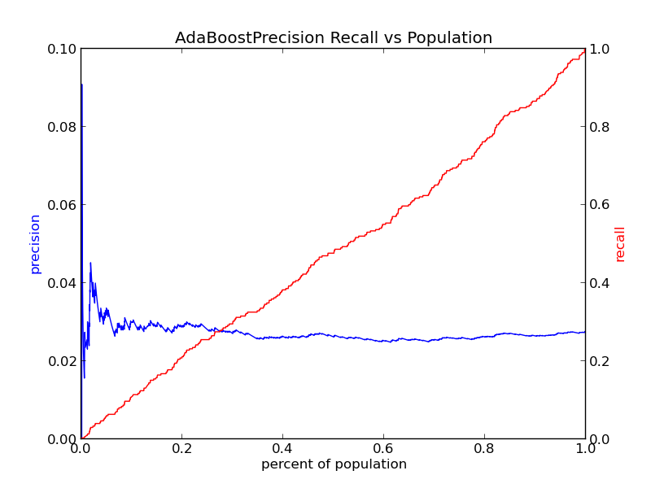
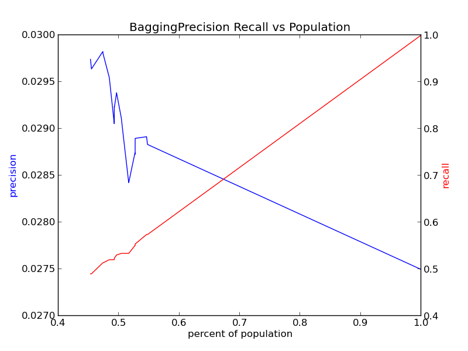

| Band | Last intervention |
|---|
No rows match these filters
Clear the grade or band chips, or empty the search box to see the full synthetic cohort of 24 rows.
Scores are a demo heuristic (absence rate, GPA decline, credit shortfall, behavior flags — weights shown in each profile). Model-based scoring lives in the repository’s Python pipeline; see the Pipeline tab.
Intervention capacity
How much can a school actually reach? Set the share of the cohort you could serve, and see who targeting would catch.
Flags the highest-risk rows until the capacity budget is filled.
* Computed live on the synthetic cohort: demo risk scores ranked against the illustrative outcome labels. Real precision–recall evaluation happens in pipeline/__6_Evaluate.py on the confidential school data.
Precision–recall across the ranked cohort
Each point is a cutoff: everything ranked at or above it gets an intervention.
Canvas drawing is unavailable in this browser.
Targeting vs. universal programs
The project’s stated goal is a scalable ranking system that lets a school system “target their interventions to individuals who are most immediately at risk for dropping out” (README). A ranking is not a yes/no classifier: it answers “if we can only reach k students this term, whom do we start with?”
- Small capacity, high yield. Serving only the top slice gives the highest precision — most seats go to students who show the same signals as the illustrative dropouts.
- Expanding capacity dilutes yield. As k grows, precision slides toward the cohort’s base rate while recall climbs toward 1.0 — more true cases caught, but more false alarms per seat.
- Universal programs trade precision for coverage. School-wide attendance or tutoring programs reach the hidden cases a ranking can miss (students whose risk signals never spiked), but at far higher cost per student reached.
- Policy read: precision@k is a budgeting number. Pick k from the intervention capacity you can actually fund, then judge the system at that operating point — not at an arbitrary 0.5 threshold.
Evaluation method mirrors the repository: precision/recall/F1 plus precision–recall curves versus population share (pipeline/__6_Evaluate.py, graphs/*precision_recall_n.png).
What this preview does — and does not — run
DEWS in this folder is a static front-end. The project’s real system is a SQL + Python ranking pipeline built for a Machine Learning in Public Policy course (UChicago, with the Center for Data Science in Public Policy). There is no server, no saved model weights, and no single command that runs end to end — the training data was kept on a secure server and is not published.
Needs: the cohort CSVs (not in repo) + scikit-learn + pandas. The code targets a legacy scikit-learn era (sklearn.cross_validation was removed in scikit-learn 0.20) and hardcodes server paths such as /mnt/data2/education_data/…, so expect to port before running.
SQL — database construction
Real files in db_creation/:
- upload_data.sql raw cohort tables (grade 6–12 yearly records)
- create_new_tables.sql cohort joins across grades
- add_school_data.sql attach school-level attributes
- add_dropout_column.sql derive g6…g12_dropout labels from withdrawal codes
- school_data_small.csv small school-level reference extract
Python — pipeline steps
Real files in pipeline/ (run in order):
- __1_and_2_Read_and_Describe_Data.py ingest + summary stats
- __3_Missing_Data_Processing.py imputation
- __4_Generate_Features.py discretization, dummies
- __5_Classifier.py classifier suite
- __6_Evaluate.py precision/recall, PR curves
- final_pipeline.py consolidated entry (cohorts 1/2)
- mcps_pipeline.py + __5_MCPS_Classifier.py, __6_MCPS__Evaluate.py MCPS variants
- precision_recall_population graph.py graph generation
Models evaluated
- Logistic Regression — one of the two best-model picks in final_pipeline.py
- Random Forest — class-weighted {0:1, 1:10}; other best-model pick
- Decision Tree max_depth=5
- AdaBoost
- Bagging
- Stochastic Gradient Descent modified_huber, class-weighted
- k-Nearest Neighbours k=3
- Also in __5_Classifier.py: linear/ANOVA SVMs and gradient boosting. Evaluation uses 5-fold CV with precision, recall, F1, accuracy and precision–recall curves.
Outputs in this repo
graphs/ precision-recall vs. population PNGs:






pipeline/output/ additionally holds evaluation/, histograms/ and an output readme.
How to run (honest version)
There is no single command. Rough order of operations:
# 1. Build the database with the SQL in db_creation/ against the secured # cohort data (upload_data.sql, create_new_tables.sql, # add_school_data.sql, add_dropout_column.sql). # Training CSVs are NOT in this repo — see pipeline/data/Data_Readme.md. # 2. Install a legacy-era stack (pandas + scikit-learn with sklearn.cross_validation). # 3. Run the steps, e.g.: python pipeline/__1_and_2_Read_and_Describe_Data.py python pipeline/__3_Missing_Data_Processing.py python pipeline/__4_Generate_Features.py python pipeline/__5_Classifier.py python pipeline/__6_Evaluate.py # consolidated entry (argv: pred_grade, ready_to_test): python pipeline/final_pipeline.py 9 False # NOTE: data paths inside the scripts point at the authors' server # (/mnt/data2/education_data/...) and must be edited first.
FERPA-conscious notes
- The original student data was withheld for confidentiality (pipeline/data/Data_Readme.md); only school-level reference data (db_creation/school_data_small.csv) ships with the repo.
- This preview therefore runs entirely on a synthetic cohort. Do not paste real student records into this page — everything you type stays in your browser’s localStorage, but this is a demo, not an approved system of record.
- Risk bands here are triage prompts for humans, not determinations about any individual student. Any real deployment needs the district’s data-governance and family-notification processes.